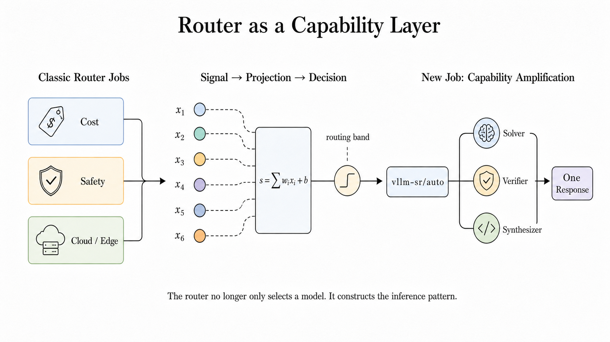
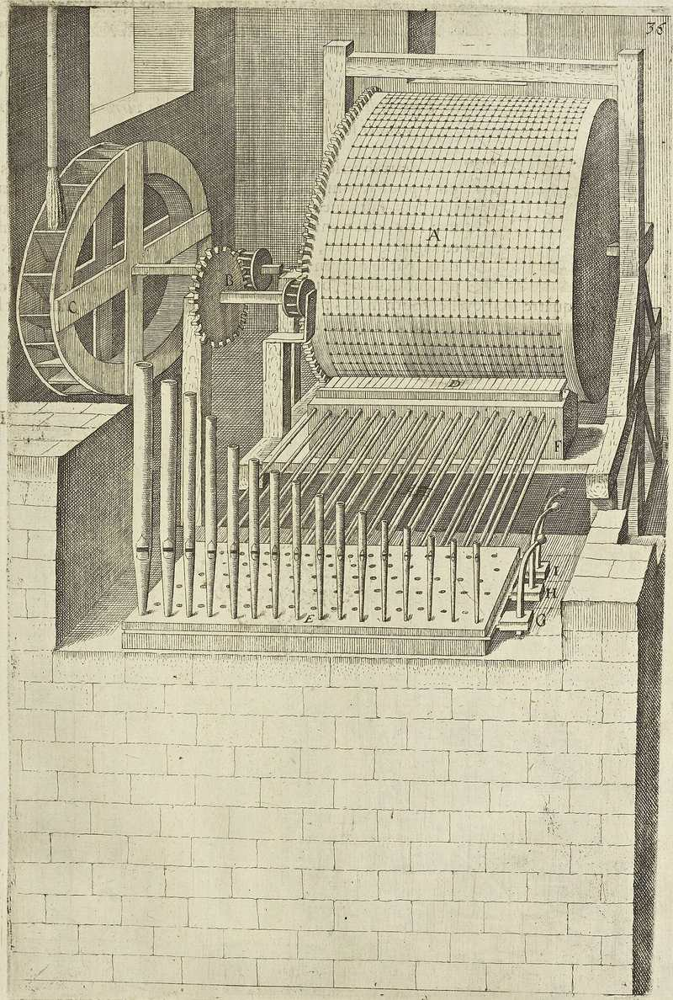

THE FRONT PAGE
EDITOR'S NOTE: A busy day in the latent space. #Judgment and craft
BREAKING VECTORS
MODEL ARCHITECTURES

API-Level Routing Replaces Massive Models via Specialized Micro-Agents
By shifting multi-agent collaboration directly into the model API, the framework attempts to bypass the bloated compute overhead of frontier models. It offers an elegant patch for diminishing returns in raw model scale, though it risks creating fragile, hyper-specific dependency chains that engineers will inevitably have to untangle later.
LAB OUTPUTS
Open Memory Protocol attempts to unify context across competing AI interfaces
The proposal introduces a shared abstraction layer to sync user context between siloed environments like Claude and ChatGPT, promising a rare moment of interoperability. However, centralizing state across disparate runtimes risks introducing subtle consistency bugs and security leaks that the current spec leaves largely unaddressed.
INFERENCE CORNER

Demystifying the CUDA execution pipeline
An examination of the exact mechanical sequence triggered by a CUDA kernel launch exposes the growing distance between modern high-level frameworks and the underlying hardware realities. As abstraction layers thicken, developers risk losing the granular control necessary to prevent catastrophic memory bottlenecks in large-scale cluster deployments.